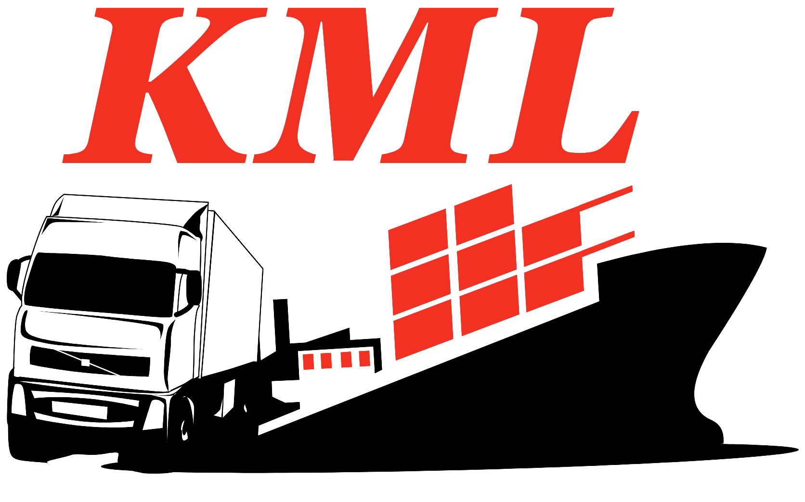

 CV. KARYA MANDIRI LOGISTICS
CV. KARYA MANDIRI LOGISTICS
Kami melayani pengiriman barang dan kendaraan ke seluruh Indonesia.
Hubungi KamiCV Karya Mandiri Logistic adalah perusahaan logistik terpercaya yang berbasis di Surabaya, dengan jangkauan pengiriman ke seluruh wilayah Indonesia, termasuk Kalimantan, Sulawesi, Sumatera, Jabodetabek, Maluku, dan Papua. Kami melayani pengiriman barang umum, alat berat, hingga kendaraan dengan sistem door-to-door, undername service, dan layanan kepabeanan (LCL/FCL).
Sejak didirikan, kami berkomitmen memberikan layanan logistik yang aman, tepat waktu, dan efisien. Didukung oleh tim profesional berpengalaman serta armada pengiriman darat, laut, dan udara, kami hadir sebagai mitra terbaik bagi pelanggan individu, perusahaan, maupun distributor nasional.
Dengan prinsip "Best Price, Best Service", kami terus berkembang dan berinovasi menghadirkan solusi logistik yang fleksibel, transparan, dan ramah pelanggan.
Kami memberikan layanan pengambilan dan pengantaran barang langsung dari dan ke lokasi Anda tanpa repot. Cocok untuk pengiriman personal maupun bisnis.
Kami menyediakan jasa undername legal resmi untuk Anda yang membutuhkan dokumen perusahaan dalam proses ekspor/impor tanpa memiliki legalitas sendiri.
Proses kepabeanan Anda akan ditangani oleh tim ahli kami. Baik pengiriman Less than Container Load (LCL) maupun Full Container Load (FCL).
Kami menawarkan pengiriman via laut dan udara dengan harga kompetitif, pilihan rute fleksibel, serta jadwal yang dapat disesuaikan kebutuhan Anda.
Head Office: Jl. KH Ahmad Dahlan No. 24, Kukusan, Depok, Jawa Barat
Sidoarjo: Jl. Perum Jade Ville Blok Raya No. 3, Buduran, Sidoarjo
Surabaya: Jl. Kalimas Baru Pos 5, Tj. Perak, Surabaya
📞 031-99715320 | 📱 087787651023 / 081260643246
📧 karyamandirilogistic@gmail.com